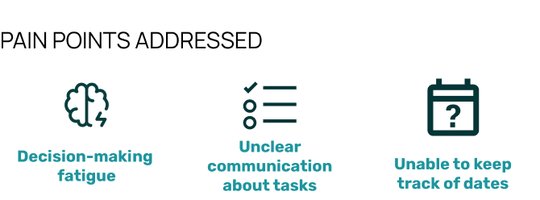
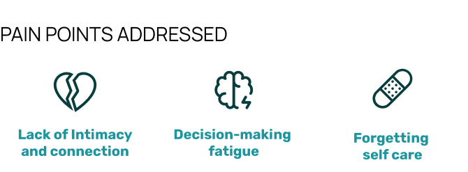
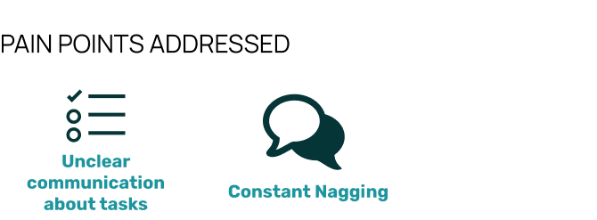
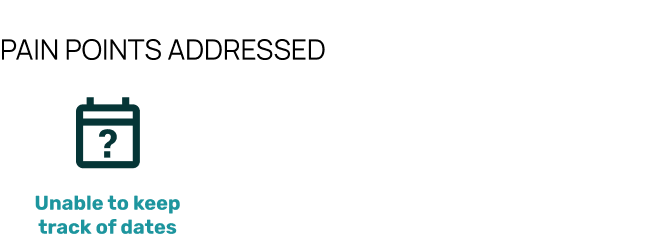
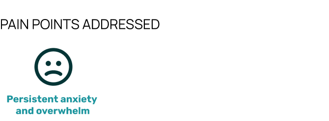
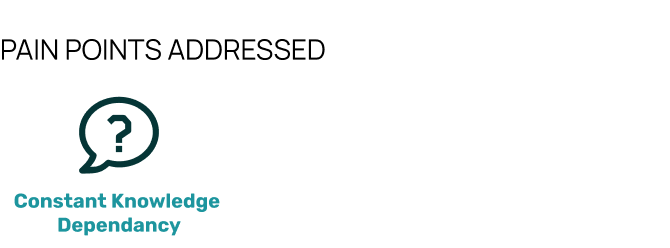

Addressing and Managing the Mental Load
UX / UI / PRODUCT DESIGN
OVERVIEW
The mental load is the often overlooked effort in daily domestic tasks, typically taken on by caregivers who handle more cognitive and emotional responsibilities than their partners. This can lead to overwhelm and exhaustion, leaving little room for self-care, as well as build resentment towards partners.
An app designed to offer decision support, streamlined task management, integrated self-care reminders, and encourage productive communication between partners or families in order to share the mental load better.
60% of users reported feeling overwhelmed by day-to-day tasks and anticipating upcoming appointments. This summary page breaks them down to manageable views with priority tasks and an overview of the current week displayed. This allows users to save time and energy from creating priorities themselves and from navigating to other pages when they’re short on time.
Users can create their own widgets to track goals, get generated self-care reminders, and even leave encouraging notes to their partner. A handy tool to make make decisions, see countdowns and more all in one convenient spot.

Users can track not only their own tasks but also the tasks of others in their family to see how they’re distributed. There are multiple filtering options to view tasks for users who prefer addressing them in order of things like priority or other ways.

Users expressed the need for better visibility of shared events, ensuring no overlapping schedules and preventing last-minute conflicts. Users can add and view to the shared calendar as well as assign people to events or dates for shared responsibility.
Users surveyed said they felt less stressed when they wrote out everything that was floating in their head, hence this feature addresses the anxiety of forgetting tasks by allowing users to create new tasks enabling a quick brain dump of everything on their minds. Once created, tasks are shared between users, ensuring responsibilities are not placed on one person alone promoting shared accountability.
Many users expressed feeling mentally exhausted from constantly keeping the 'browser tabs' of their minds open, juggling information about everything from household details to their children's schedules. Whether it's remembering the date of a child’s last vaccination, the babysitter's phone number, the dentist's address, the brand of chili sauce they always buy, or the dog’s allergies. (It’s a lot right?) This feature keeps essential information easily accessible, reducing the burden on one partner to remember everything for the household.

Based on the survey conducted to explore how individuals manage mental load, here are the key coping strategies identified:

Following my research, I came to these 2 conclusions:
HOW MIGHT WE
Since carrying the mental load involves frequent task creation and reminders, having the tool readily available on a mobile app makes it a fitting solution as phones are constantly with users. Instant updates and notifications make it easy to stay on top of ever-changing schedules and shared tasks, merging seamlessly into daily routines.
Mobile apps can integrate with calendars, reminders, messaging, and even smart home devices, creating an ecosystem of tools that can work together in one nice package.
My design was driven by the idea that the solution should not be a replacement for face-to-face communication, but rather a tool to help start a conversation. I sketched out low-fidelity wireframes and user flows to visualize interaction patterns.

Refinements I made based on user testing responses to ensure the app aligned with real user needs and behaviours.
The home page felt cluttered and impersonal, with too many features competing for attention. This made it difficult for users to quickly understand what was happening and navigate the app effectively.
I separated the calendar and tasks into two distinct tabs, making it easier for users to quickly view summaries of both. I also added a personal greeting to make the interface feel more welcoming.
The filtering buttons made the page feel quite busy and a little confusing and limited as users have different preferences on how they like to view their list.
To address this, I simplified the filters by integrating them into a dropdown menu. This made the page feel cleaner and less overwhelming, while also offering more flexibility in how tasks are displayed.
As I continued gathering feedback, several critical questions and roadblocks emerged. These insights guided new design iterations and helped refocus the target audience, ensuring the solution is more aligned with the needs and willingness of those it aims to support.
I developed branding that is both simple and impactful, utilizing bold colours and jagged graphic shapes to create a memorable visual identity.
The logo features an *asterisk*, which serves as a symbol of importance and priority in writing like lists or notes. In the context of MindSync, this asterisk, which flags the important, alludes to the shared responsibilities of both partners which reinforces the core mission of promoting awareness and collaboration in managing the mental load.
One of the most insightful lessons from this project was understanding the complexity of designing for a wide range of users, each with different needs and perspectives. Household management has traditionally been seen as a woman's role, but after surveying many queer couples, disabled couples, single households, other non-traditional family structures, and families with men who take on more household responsibilities, I knew it was essential to frame the app in a gender-neutral way. This required being intentional with language, rethinking features, and redesigning the overall user experience to avoid reinforcing outdated stereotypes and instead create an inclusive environment that resonates with users regardless of gender.
Another key learning was navigating the challenge of designing for a topic as multifaceted and emotionally charged as the mental load. Managing household tasks involves many moving parts which can be a burden that can easily feel overwhelming. One of the biggest challenges was figuring out how to break this down in a way that felt manageable for users without oversimplifying the issue. I had to find ways to take complex, often invisible, mental processes and turn them into clear, actionable tasks within the app. The goal was to make the app intuitive and approachable without overwhelming users with too much information. This required not only understanding the psychological aspect of the mental load but also learning to design flows that guide users through these tasks seamlessly, helping them organize and offload their mental to-do lists without adding to their stress.

A wishlist of things I want to explore in the future with this project when I find myself able to pick this project back up again
I’d like to explore how an app like this could be adapted for devices like smartwatches or other wearables, not only for maximum task tracking efficacy (which admittedly sounds a liiitle dystopian), but also to serve as a tool for encouraging healthier habits, such as break reminders and prompts for practicing mindful thinking
I’m definitely curious to see what could come out of this product if it were to be pushed further. I’d love to see if the app could foster lasting behavioural change such as how often users shift from needing prompts to anticipating tasks on their own as a means of measuring success.
Some draft features I’d want to add in the future but in a less silly and direct way than what I’m about to show you, dear reader.
I’m sure some users of MindSync may eventually find themselves putting off or glazing over reminder notifications if they get used to seeing them all the time. This feature gives the option of verbally reading out the task to close the modal, or to call 911 in case of an emergency if there is no time to do it- which must be annoying. Just like the mental load.
It’s easy to ask your wife or mom a billion questions about where the forks are, or what should the kids eat today. But it’s also easy to figure things out yourself (after a bit of digging around and thinkling of course). This feature will serve as a firm but helpful reminder of that maybe.. things can just be figured out along the way.
Some potential Instagram story ads I put together for Mindsync!